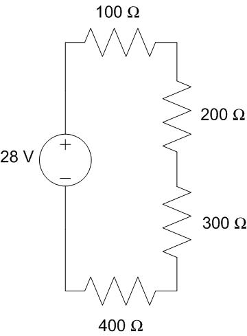
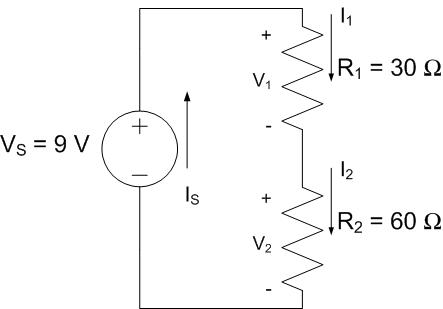
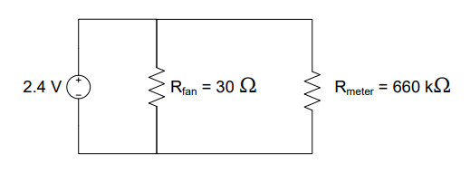
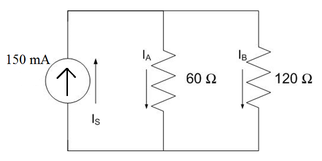

Lesson 3 – Series and Parallel Circuits#
Learning Objectives covered in this Lesson#
I can calculate the voltages, currents, and power associated with devices in a simple DC-powered circuit using tools such as KVL, KCL, voltage and current dividers, Ohm’s Law, and the power equation.
Motivation#
Last lesson we analyzed circuits containing two different configurations for connecting resistors, or devices that can be modelled as resistors, up to a voltage source. These configurations, known as series and parallel, were deliberately chosen because they represent fundamental ways of connecting devices. The vast majority of circuits we’ll encounter will place its components in either parallel or series (or both) arrangements.
Series Resistors#
Looking at the circuit below, we have a “series” arrangement. The resistors are connected end-to-end in a chain. Once those ends are connected to a voltage source, the same amount of current flows sequentially through each device, and each device is subjected to a fraction of the voltage. For a long string of lights, this is a way to apply a small voltage to each light, but a disadvantage is that one bad light will break the circuit, preventing current from flowing.

Figure 1: A series circuit with one voltage source and three resistors
Key Concept: When only two components are connected at a node, those components are in series.
Analyzing the series circuit in Figure 1, starting with KVL for the one and only loop, we write:
Each voltage across a resistor can be rewritten using Ohm’s Law:
Using KCL at each node, we can conclude that our current terms are all equal. A more general conclusion is that any number of resistors in series have the same current.
Key Concept: The current flowing through series components is always the same.
Returning to our KVL equation and substituting all current terms with the term IS, we have:
The last step above introduces the term REQ(SERIES) where EQ is an abbreviation for “equivalent” and stands in for the sum of all resistances. Moreover, we can replace the three resistors with an equivalent circuit as shown below, allowing us to analyze the circuit’s behavior as if it were just one voltage source and one resistor.

Figure 2: A series circuit and its equivalent
Key Concept: The equivalent resistance of resistors connected in series is the sum of the individual resistances:

Figure 3: Combining resistors in series into a single resistor
At any location within a circuit, if we find two or more resistors in series, we can simplify them without even knowing the voltage or current. We can sum the resistances and rewrite that portion of the circuit as a single resistor. However, we must be careful that they are actually in series by verifying that there’s nothing else attached to the interior nodes. After all, those interior nodes will “disappear” when the resistors are replaced.
Example Problem 1#
An inertial navigation system (INS) for a UAS is modeled as 4 resistors in series with a 28-Volt power supply. How much power is being produced by the power supply?
Understand: We have a number of devices (modeled as resistors) connected in series with a voltage source.
Identify Key Information:
Knowns: resistance values of each component and the source voltage is 28V.
Unknowns: voltage across each resistor; power produced by the source, PS.
Assumptions: all of the power produced by the source is consumed by the load resistors.

Plan: By consolidating the series resistors into a single equivalent resistor, we can use the power equation to determine the power consumed by the equivalent load. We then assume the source is producing all of the power needed by the load.
Solution: Given VS = 28V, PS can be found directly from IS using a power relationship:
In order to find IS, we must find a component in the circuit where we know at least two of the four parameters of power, current, voltage, and resistance. For any single resistor, we only know the resistance, but for all the resistors together, the voltage is known.
By simplifying the 4 resistors into single equivalent resistor, there will be a component with enough information to analyze the circuit. Compute equivalent resistance:
For descriptive purposes, we’ll redraw the circuit using the equivalent resistance and designate this device by the subscript “REQ” (referring to the “equivalent resistance”). By KVL, VREQ = VS. We can now use the power equation in concert with Ohm’s Law to determine the power consumed by the equivalent resistor.
Answer: 784 mW.
Example Problem 2#
Two light bulbs are placed in series in the two circuits below and are each represented by resistors R1 and R2. The voltage source in both circuits remains the same, as well as the sum of the resistors. In Circuit #1, the resistors are equal, but for Circuit #2, they are different. For each circuit, how much power is consumed by each light bulb?
Understand: Two light bulbs are connected in series. We want to compare the power consumption as the resistances change between two different circuits.
Identify Key Information:
Knowns: The resistance values of each bulb and the source voltage, VS = 9 V.
Unknowns: Power consumed (P1 and P2) for Circuits #1 and #2; current in the circuits
Assumptions: The bulbs can be modeled as resistors.
Plan: In order to find the power consumed, we must either find the voltage or current through the resistors. Since we don’t have the tools yet to determine the voltages, we can find the current by replacing the two series resistors with a single equivalent resistors. KVL will then give us the voltage across the equivalent resistor.
Solve: The equivalent resistance of each circuit is:

Circuit #1

Circuit #2
The equivalent resistance for both circuits is the same: 90Ω. This means that we can model both circuits with the circuit below.
By KVL, we see that all 9V is dropped across the 90Ω resistor. Therefore, Ohm’s Law gives the following:
Now, we have all the information we need to calculate the voltages and currents through each resistor in each circuit:
Circuit #1 |
Circuit #2 |
|---|---|
\(V_{1} = (45\ \Omega)I_{1}\) |
\(V_{1} = (30\ \Omega)I_{1} = (30\ \Omega)(100\ mA) = 3.0\ V\) |
\(V_{2} = (45\ \Omega)I_{2} = (45\ \Omega)(100\ mA) = 4.5\ V\) |
\(V_{2} = (60\ \Omega)I_{2} = (60\ \Omega)(100\ mA) = 6.0\ V\) |
\(P_{1} = I_{1}V_{1} = (4.5\ V)(100mA) = 450\ mW\) |
\(P_{1} = I_{1}V_{1} = (3.0\ V)(100\ mA) = 300\ mW\) |
\(P_{2} = I_{2}V_{2} = (4.5\ V)(100\ mA) = 450\ mW\) |
\(P_{2} = I_{2}V_{2} = (6.0\ V)(100\ mA) = 600\ mW\) |
Notice first that the distribution of power and voltage are both proportional to the resistances. Secondly, the sum of the light bulb’s voltage and power values are the same (9V and 900mW) for each circuit and can be checked against the supply’s current and voltage:
Answer: For Circuit #1, \(P_{1} = 450\ mW\) and \(P_{2} = 450\ mW\). For Circuit #2, \(P_{1} = 300\ mW\) and \(P_{2} = 600\ mW\).
Voltage Division#
For resistors in series, the respective voltages can be calculated using a shortcut known as voltage division. Return to the previous example problem’s circuits depicted below:

Figure 4: Two series circuits with different resistances but same current
Circuit #1 |
Circuit #2 |
|---|---|
\(V_{1} = (45\ \Omega)I_{1} = (45\ \Omega)(100\ mA) = 4.5\ V\) |
\(V_{1} = (30\ \Omega)I_{1} = (30\ \Omega)(100\ mA) = 3.0\ V\) |
\(V_{2} = (45\ \Omega)I_{2} = (45\ \Omega)(100\ mA) = 4.5\ V\) |
\(V_{2} = (60\ \Omega)I_{2} = (60\ \Omega)(100\ mA) = 6.0\ V\) |
On the left, the equal resistors drop equal voltages – we just cut 9V in half. One could determine this intuitively without even computing the current. At the right, the results for voltage have the same proportion of the resistor values, a 1:2 ratio. Therefore, we only need to know the relationship between series resistors to analyze voltage.
For a more general case, consider the series resistors in Figure 5 below where IS is source current, REQ is the sum of the three resistances, and the voltage drop across all three is called VTotal:

Figure 5: A simple series circuit
Additionally, for some resistor, X, in this chain (meaning R1, R2, or R3) Ohm’s Law gives:
By KCL, we know that IX is equal to IS, so we substitute IS for IX and solve for VX in terms of VTotal and REQ:
Which is typically shown with the resistance of resistor X (\(R_{X}\)) divided by the equivalent resistance (\(R_{EQ}\)) to highlight the fact that voltage drop is proportional to the ratio of the resistances. This equation, commonly known as the voltage divider, is shown below.
The voltage divider only works for resistors in series and is often simpler to employ than a complete implementation of KVL and KCL.
Key Concept: The voltage divider equation determines how voltage is proportionally divided between any number of series resistors.
Example Problem 3#
An inertial navigation system (INS) for a UAS is modeled as 4 resistors in series with a 28-Volt power supply. What is the voltage drop across the laser-ring gyro, which is modeled as a 200-Ω resistor?
Understand: We have several resistors in series with a voltage source. We want to know the voltage across one of the resistors in the middle of the circuit.
Identify Key Information:
Knowns: VS, the resistance values
Unknowns: V200Ω
Assumptions: None.
Plan: We can use the voltage divider to get right to the voltage value of the laser-ring gyro.
Solve: Applying the voltage divider equation with RX = 200 Ω, we get:
Answer: The voltage drop across the laser-ring gyro is 5.6 V.
Example Problem 4#
You have two 150-Ω resistors and a third resistor of unknown value, all in series and subjected to a 6V source. If 1 V is desired across this third unknown resistor (RA), what should the value of RA be?

Understand: We have three resistors in series, and need to find the resistance that will make the circuit “work” as desired (that is, the unknown resistor will drop 1V).
Identify Key Information:
Knowns: VS = 6 V, the other resistance values, VA = 1 V
Unknowns: Ra, Is
Assumptions: None.
Plan: Ultimately, we want to use the voltage divider to determine the voltage proportionality between RA and the other resistors. First, though, we can combine the two 150 Ω resistors to an equivalent 300 Ω resistor. Then, we can use the voltage divider equation to determine the total equivalent resistance of the circuit. Finally, since resistors in series add, we can subtract off the 300 Ω resistor to determine the unknown resistance.
Solve: Given that the source is 6V and the voltage across RA is 1V, we can use KVL to determine the remaining voltage drop (across the equivalent 300 Ω resistor) is 5V. Now we’re ready to use a voltage divider equation, and then we’ll rearrange it to solve for REQ.
Set RX to 300 Ω, VX to 5V, and VTotal to 6V.
Finally, since REQ =300Ω + RA = 360Ω, we can conclude RA = 60Ω.
Answer: A 60-Ω resistor will provide the needed 1V.
Parallel Resistors#
The other basic arrangement of devices is to place them in parallel. Instead of the devices being connected end-to-end, each device shares the same two nodes. Figure 6 below shows three resistors and a voltage source connected in parallel.

Figure 6: A parallel circuit with one voltage source and three resistors
When we apply KVL to this circuit, we find that all the voltage drops across all the resistors are the same:
This identity is the foundation of parallel equivalent resistance.
Key Concept: Devices in parallel have the same voltage drop across them.
Inspecting either node with KCL, we find that:
Substituting the current through each resistor using Ohm’s Law, we have:
Since the voltages VA = VB = VC = VS, this equation simplifies to:
And rearranges to:
Where we have introduced REQ(PARALLEL) as the reciprocal of the sum of the reciprocals of individual resistances. Much as we did with resistors in series, we can replace the three resistors in Circuit #1 with an “equivalent” circuit as shown on the next page, giving us a much simpler circuit to analyze.
Key Concept: The equivalent resistance for resistors in parallel is given by
We are not limited to only having three resistors in parallel; as the parallel equivalent resistance equation above shows, we can have two or more resistors placed in parallel.
Figure 7: A parallel circuit and its equivalent
For parallel resistors, if we specialize the equivalent resistance equation to only two resistors (here, RX and RY), we find the following equation:
This equation is a convenient shortcut when only two resistors are in parallel. This shortcut does not extend to three or more resistors in parallel, and in such cases, the equivalent resistance equation at the top of this page must be used.
Example Problem 5#
A cooling fan, which is modeled as a 30-Ω resistor, is powered by a 2.4-V battery. To monitor the battery, a voltmeter with a resistance of 660 kΩ is added in parallel as shown. How much resistance does the voltage source now see?

Understand: For any circuit, the amount of resistance the voltage source “sees” is the equivalent resistance of the circuit. Therefore, we are trying to simplify a circuit with two parallel resistors connected to a 2.4V source. Since the resistance of the meter is significantly larger than that of the fan, we expect the fan to consume most of the current. We know this is true for two reasons: parallel resistors share the same voltage and Ohm’s Law tells us that, for the same voltage, a lower resistance will have a higher current. From KCL, we know that the currents through the fan and the meter will add at the top and bottom nodes to become the source current. If we were to divide the source voltage by the source current, we would get a resistance, and this resistance would be the equivalent resistance of the circuit. Since the fan is the primary contributor to the source current, it has the largest impact on the equivalent resistance. Therefore, the resistance of the fan will be most of what the source “sees”.
Identify Key Information:
Knowns: VS = 2.4 V, Rfan = 30Ω, Rmeter= 660kΩ
Unknowns: REQ
Assumptions: None
Plan: We will use the equation for finding equivalent resistance of resistors in parallel. We can either use the generic equation or the specialized equation for only two resistors.
Solve: Using the specialized equation for two resistors in parallel, we have:
Answer: The equivalent resistance of the circuit is 30 Ω.
As stated in the “Understand” section of this example, we could use the source voltage and current to solve for the equivalent resistance of the circuit. We will prove that here.
The equivalent resistance of a circuit is the ratio of the source voltage to the source current; for that reason, we say that the equivalent resistance of a circuit is what the source “sees”.
Note: Because the voltmeters’s resistance is 22,000 times higher than the cooling fan’s resistance, the equivalent resistance is effectively the same as if there was no voltmeter in the circuit. An important feature of a voltmeter and other monitoring equipment is that they don’t interfere with circuits by modifying their behavior when attached to a circuit.
Example Problem 6#
A voltage source that supplies 6 V is used to charge various cell phones connected in parallel. Two different types of phones are currently being charged, one modeled as a 120-Ω resistor and the other as a 60-Ω resistor. How much power does the voltage source provide?

Understand: We have a circuit with a 6-V source connected to two resistors in parallel.
Identify Key Information
Knowns: VS = 6 V, RA = 60 Ω, RB= 120 Ω
Unknowns: Power, PS, provided by the voltage source; currents IS, IA, and IB
Assumptions: The source provides all the power needed by the load.
Plan: We eventually want to use the power equation to determine how much power the source is providing. Since we know the voltage of the source and the resistances, we can use the power equation in conjuntion with Ohm’s Law (\(P = \ \frac{V^{2}}{R}\)). However, we need to ensure we use the equivalent resistance for the parallel resistors (\(R_{EQ} = \ \frac{R_{1}R_{2}}{R_{1} + R_{2}}).\ \)
Solve: Using equivalent resistance, this circuit can be simplified as shown below, replacing resistors RA and RB with REQ:

Where REQ is given by the equivalent resistance formula for parallel resistors:
Notice that the equivalent resistance is smaller than the smallest resistor value.
Next, we can solve for the power provided using Ohm’s Law and the Power Equation:
Answer: The power provided by the source is 900 mW.
Note: There are other solution methods. The fact that the resistors are in parallel tells us that:
and since the sum of power consumed is equal to power provided:
Current Division#
For resistors in parallel, we can develop a KCL-based shortcut similar to the voltage divider introduced earlier in this reading. Consider the circuit below:
Figure 8: A parallel circuit with two resistors and a voltage source
From KVL, we already know that each resistor has a 6-V drop. Using Ohm’s Law, we can determine which resistor has more current flowing through it:
No doubt you have heard something similar to the following statement: Electricity prefers the path of least resistance. We can see in the circuit above that this is true. More current flows through the smaller 60-Ω resistor than through the larger 120-Ω resistor. In fact, twice as much current flows through the 60-Ω resistor because it is half the size of the 120-Ω resistor. In general, for parallel resistors RX, RY, and RZ with equivalent resistance REQ, the voltage across resistor RX, VX, is equal to the voltage across REQ, VTotal. This is true because the voltages across the parallel resistors are equal:
Rearranging to find IX, we have the general current divider equation:
The current divider equation only works for resistors in parallel and may be quicker than using KVL, KCL, and Ohm’s Law to solve for currents.
Key Concept: The current divider equation determines how current is proportionally divided between any number of parallel resistors.
Now, if there are only two resistors, REQ can be written in terms of RX and RY giving us the two-resistor current divider equation:
The two-resistor current divider equation skips finding equivalent resistance. With three or more resistors, we must find REQ and use the general current divider.
Example Problem 7#
In the circuit represented below, how much current passes through the 120-Ω resistor (IB)?

Understand: Instead of the typical voltage source, here we have a current source. In this case, the source provides a constant current of 150 mA. We have two resistors in parallel and want to find the current through one of them.
Identify Key Information:
Knowns: IS = 150mA, RA = 60Ω, RB= 120Ω
Unknowns: currents IA, and IB
Assumptions: None.
Plan: We can use a straightforward current divider (for two resistors only) to find the desired current.
Solution: We can use two-resistor current division to find the current, being careful to properly assign the values. The two resistor current divider formula is:
Which, in this case, is:
Answer: The current passing through the 120-Ω resistor is 50 mA.
Additionally, there is 100 mA of current passing through the 60-Ω resistor. Thus, where the resistors in parallel have a 1:2 ratio of resistance, their currents have a 2:1 ratio.
Voltage Adapters#
Oftentimes, in real life, we cannot control the source voltage, and our load may require a lower voltage. What do we do with the “extra” voltage (KVL tells us it has to go somewhere)? We can use what is called a voltage adapter. The adapter’s job is to “soak up” some of the voltage in the circuit, thereby reducing the voltage across a particular load to meet design criteria. Now, it may show up in our circuits as a generic box as opposed to the traditional zig-zag resistor, such as in the circuit below. We draw a box for convenience; since we haven’t specified the arrangement or the number of resistors to place inside, it’s easier to represent the adapter as a “black box”.
Example Problem 8#
Determine the resistance required for a voltage adapter so that it can allow a 12-V lamp (modeled as a 2-kΩ load) to be used with an 18-V source. The voltage adapter is placed in series with the lamp, as shown below.

Understand: Here, we have a lamp that has a maximum voltage rating of 12V. We need a voltage adapter to “soak up” the extra voltage from the voltage source. The question is asking us to find the resistance of the voltage adapter.
Identify Key Information:
Knowns: VS = 18V, RLamp = 2kΩ, VLamp = 12V
Unknowns: RAdapter and VAdapter
Assumptions: None.
Plan: In order to find the resistance of the adapter, we will need to use Ohm’s Law. In order to use Ohm’s Law, we will need to know the current through and voltage across the adapter. We can use Ohm’s Law to find the current in the series circuit since we have the voltage and resistance of the lamp. We can find the voltage across the adapter via KVL. So, we will find IS by Ohm’s Law, then VAdapter via KVL, and then use that voltage to find Radapter.
Solve: By using Ohm’s Law with the lamp voltage and resistance, we can find the current through the lamp:
Since we have a series circuit, the same current must flow through the entire circuit, so \(I_{S}\) and \(I_{Adapter}\) must be equal to 6 mA as well.
Secondly, applying KVL to this circuit gives us one equation. We can use this equation to solve for VAdapter.
Finally, we can use Ohm’s Law to find the resistance RAdapter:
Answer: A 1-kΩ resistor in series can serve as the voltage adapter.
If only 2-kΩ resistors were available, how could this be done? Placing two 2-kΩ resistors in parallel would provide a 1-kΩ voltage adapter.